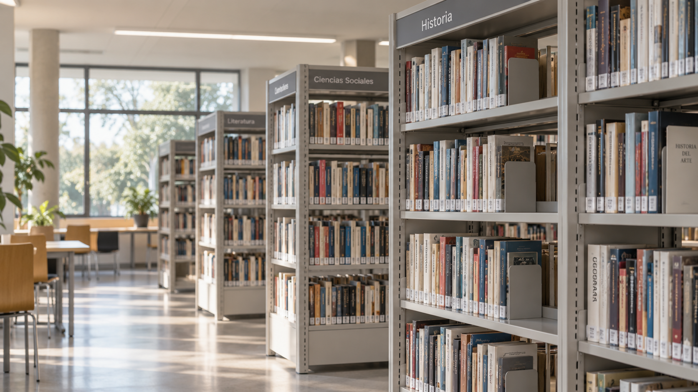

Santa Rosa, La Pampa · Desde 2002
Biblioteca Popular
Edgar Morisoli
Trabajamos para acercar la lectura y la cultura a toda la comunidad.
Horarios de atención
Novedades
Novedades literarias
Los últimos títulos que sumamos a nuestros estantes.
-
Foto de tapa del libro (vertical, 2:3)
El buen mal
Samanta Schweblin
-
Foto de tapa del libro (vertical, 2:3)
La traición de mi lengua
Camila Sosa Villada
-
Foto de tapa del libro (vertical, 2:3)
Los jardines de Juana
Natalia Bericat
-
Foto de tapa del libro (vertical, 2:3)
La Vegetariana
Han Kang
Programación
Nuestros talleres
Propuestas para todas las edades a lo largo del año.
Foto de la biblioteca por dentro o de una actividad (horizontal, 4:3)
Desde 2002
Una biblioteca popular en el corazón de Santa Rosa
La Biblioteca Popular Edgar Morisoli funciona en Santa Rosa, La Pampa, desde el 24 de agosto de 2002. Trabajamos para acercar la lectura y la cultura a toda la comunidad.